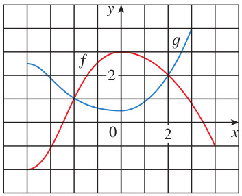
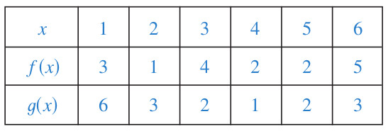
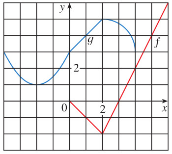

Capítulo 13 Evaluación de Funciones: Exponenciales y Logarítmicas (Ev_conceptoFuncionExp_v1)
13.1 Introducción
Bienvenido a la Evaluación Interactiva de Álgebra y Precálculo: Concepto de Funciones, Exponenciales y Logaritmos (Ev_conceptoFuncionExp_v1).
Este cuestionario consta de 29 preguntas exhaustivas divididas en tres bloques temáticos para evaluar tu comprensión en lectura de funciones, composiciones, modelado de leyes exponenciales y logarítmicas, resolución de ecuaciones complejas y resolución de sistemas no lineales.
Instrucciones Generales: * Resuelve los problemas con papel y lápiz antes de contestar. * Las preguntas son de selección múltiple con múltiples respuestas correctas (casillas de verificación). Debes seleccionar todas las afirmaciones que consideres correctas para obtener el puntaje completo en cada una. * Puedes intentar responder cada pregunta tantas veces como desees. * Al finalizar, haz clic en el botón de “Obtener Mi Reporte de Resultados” en la última sección para visualizar tu calificación y una retroalimentación formativa personalizada de estudio. * ¡Mucho éxito en tu evaluación!
13.2 Bloque 1: Lectura Gráfica y Composición de Funciones
En este bloque se analiza la lectura directa de funciones en gráficos continuos, el cálculo de composiciones de funciones en formato de tablas de valores numéricos discretos y composiciones a partir de gráficos formados por trazos lineales y cuadráticos.
13.2.1 Pregunta 1 (Lectura de f y g en el mismo plano)
✓ Seleccionar afirmaciones VERDADERAS

13.2.2 Pregunta 2 (Composición en formato tabla)
✓ Seleccionar afirmaciones VERDADERAS

13.2.3 Pregunta 3 (Composición gráfica - enunciado109)
✓ Seleccionar afirmaciones VERDADERAS

13.3 Bloque 2: Propiedades, Leyes, Simplificación y Ecuaciones
En este bloque se evalúa el uso de las leyes de los exponentes y los logaritmos, su simplificación, la conversión de expresiones de formato exponencial a logarítmico y viceversa, la expansión de logaritmos y la resolución analítica de ecuaciones.
13.3.1 Pregunta 4 (Deducir función exponencial \(f(x)=b^x\))
✓ Seleccionar afirmaciones VERDADERAS
13.3.2 Pregunta 5 (Resolver desigualdades exponenciales)
✓ Seleccionar afirmaciones VERDADERAS
13.3.3 Pregunta 6 (Relaciones exponenciales con \(2^t=a\) y \(6^t=b\))
✓ Seleccionar afirmaciones VERDADERAS
13.3.4 Pregunta 7 (Cálculo de logaritmo con bases genéricas)
✓ Seleccionar afirmaciones VERDADERAS
13.3.5 Pregunta 8 (Simplificar y escribir como un solo logaritmo)
✓ Seleccionar afirmaciones VERDADERAS
\[\frac{1}{2}\ln(36)+2\ln(4)-\ln(4)\]
Identifique cuáles de las siguientes afirmaciones son verdaderas:
13.3.6 Pregunta 9 (Reformular de exponencial a logarítmica)
✓ Seleccionar afirmaciones VERDADERAS
\[(a+b)^{2}=a^2+2ab+b^2\]
Identifique cuáles de las siguientes afirmaciones son verdaderas:
13.3.7 Pregunta 10 (Reformular de logarítmica a exponencial)
✓ Seleccionar afirmaciones VERDADERAS
\[\log_{\sqrt{3}}81=8\]
Identifique cuáles de las siguientes afirmaciones son verdaderas:
13.3.8 Pregunta 11 (Valor exacto de \(\log_{10}(0.0000001)\))
✓ Seleccionar afirmaciones VERDADERAS
\[\log_{10}(0.0000001)\]
Seleccione las afirmaciones que son verdaderas:
13.3.9 Pregunta 12 (Valor exacto de \(25^{\log_5 8}\))
✓ Seleccionar afirmaciones VERDADERAS
\[25^{\log_{5}8}\]
Identifique cuáles de las siguientes afirmaciones son verdaderas:
13.3.10 Pregunta 13 (Valor exacto de \(e^{-\ln(7)}\))
✓ Seleccionar afirmaciones VERDADERAS
\[e^{-\ln(7)}\]
Identifique cuáles de las siguientes afirmaciones son verdaderas:
13.3.11 Pregunta 14 (Leyes de logaritmos - Caso 1)
✓ Seleccionar afirmaciones VERDADERAS
\[y=\frac{x^{10}\sqrt{x^2+4}}{\sqrt[3]{8x^3+2}}\]
Identifique cuáles de las siguientes afirmaciones son verdaderas:
13.3.12 Pregunta 15 (Leyes de logaritmos - Caso 2)
✓ Seleccionar afirmaciones VERDADERAS
\[y=\frac{(x^{3}-3)^{5}(x^{4}+3x^2+1)^{8}}{4x+3}\]
Identifique cuáles de las siguientes afirmaciones son verdaderas:
13.3.13 Pregunta 16 (Leyes de logaritmos - Caso 3)
✓ Seleccionar afirmaciones VERDADERAS
\[y=64x^{6}\sqrt{x+1}\sqrt[3]{x^{2}+2}\]
Identifique cuáles de las siguientes afirmaciones son verdaderas:
13.3.14 Pregunta 17 (Resuelva para \(k\): \(e^{10k}=7\))
✓ Seleccionar afirmaciones VERDADERAS
\[e^{10k}=7\]
Identifique cuáles de las siguientes afirmaciones son verdaderas:
13.3.15 Pregunta 18 (Resuelva para \(x\): \(2^{x-3}=8^{x+1}\))
✓ Seleccionar afirmaciones VERDADERAS
\[2^{x-3}=8^{x+1}\]
Identifique cuáles de las siguientes afirmaciones son verdaderas:
13.3.16 Pregunta 19 (Resuelva para \(x\): \(7^{2x+2}=343\))
✓ Seleccionar afirmaciones VERDADERAS
\[7^{2x+2}=343\]
Identifique cuáles de las siguientes afirmaciones son verdaderas:
13.3.17 Pregunta 20 (Resuelva para \(x\): \(\ln(2)+\ln(4x-1)=\ln(2x+5)\))
✓ Seleccionar afirmaciones VERDADERAS
\[\ln(2)+\ln(4x-1)=\ln(2x+5)\]
Identifique cuáles de las siguientes afirmaciones son verdaderas:
13.4 Bloque 3: Aplicaciones y Sistemas No Lineales
En este bloque se estudian aplicaciones de las funciones exponenciales y logarítmicas en el modelado científico del crecimiento de cultivos de bacterias, decaimiento de elementos radioactivos y la escala química del potencial de hidrógeno (\(pH\)) en el cuerpo humano, además del análisis analítico de sistemas de ecuaciones no lineales.
13.4.1 Pregunta 23 (Crecimiento bacteriano de E. coli)
✓ Seleccionar afirmaciones VERDADERAS
13.4.2 Pregunta 24 (Decaimiento de Radio)
✓ Seleccionar afirmaciones VERDADERAS
13.4.3 Pregunta 25 (pH de la sangre humana)
✓ Seleccionar afirmaciones VERDADERAS
13.4.4 Pregunta 26 (Cantidad inicial de bacterias en un cultivo)
✓ Seleccionar afirmaciones VERDADERAS
13.4.5 Pregunta 27 (Sistema lineal de logaritmos)
✓ Seleccionar afirmaciones VERDADERAS
\[\left\{ \begin{array}{clrr} 3\log_{10}x & - & \log_{10}y=2 & (1) \\\\ 5\log_{10}x & + & 2\log_{10}y=1 & (2) \end{array} \right.\]
Seleccione las afirmaciones que son verdaderas:
13.4.6 Pregunta 28 (Sistema no lineal con logaritmos)
✓ Seleccionar afirmaciones VERDADERAS
\[\left\{ \begin{array}{clrr} y & = & \log_{10}x & (1) \\\\ y^{2} & = & 5 + 4\log_{10}x & (2) \end{array} \right.\]
Identifique cuáles de las siguientes afirmaciones son verdaderas:
13.4.7 Pregunta 29 (Sistema exponencial-logarítmico)
✓ Seleccionar afirmaciones VERDADERAS
\[\left\{ \begin{array}{clrr} y & = & 2^{x^2} & (1) \\\\ \sqrt{5}x & = & \log_{2}y & (2) \end{array} \right.\]
Seleccione cuáles de las siguientes afirmaciones son verdaderas: